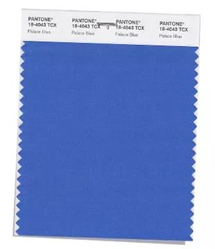

2018，她们才是真绝色！
2018-03-13 字体大小： 小 中 大
近期，时尚界最具权威的色彩机构Pantone根据秀场趋势发布了2018年春夏流行色，包含了12种特定色彩与4种季节经典色彩。
但看完这16个流行色后，小编表示有点懵，这么显黑又偏老气的颜色，竟然翻身做了主人，成了今年的流行色？
下面，我们就来说说这16个流行色的正确打开方式。纺织人，准备好了吗 ？
2018 春夏12大色彩：
樱桃番茄紅
PANTONE 17-1563 Cherry Tomato
任性的樱桃番茄红是狂烈的偏橘红色，散发热量与能量。这个勇猛、抢眼的颜色天生充满活力，让人无法忽视。
宮殿藍
PANTONE 18-4043 Palace Blue

宫殿蓝闪耀着活力，活泼又引人瞩目，是下一季里更鲜明的蓝色。
流行色除了应用在服饰，家居方面也是紧随步伐。把家装饰成蓝色的调调，视觉上真是赏心悦目。
粉灰玫瑰
PANTONE 17-1514 Ash Rose
成熟却又朴实的粉灰玫瑰色带来一个新的面貌，将温和的粉红色调改造成更踏实的颜色。
尼罗河绿
PANTONE 14-0121 Nile Green
还记得2017的流行色是充满活力的草木绿，当人们对于美妙的户外生活更加向往的时候，Pantone决定以此作为明年的流行色之一。
草地云雀黄
PANTONE 13-0646 Meadowlark
草地云雀黄明度较高，饱和度适中，也是属于色彩中偏成熟的色彩。相较于17春夏的柠檬黄冰淇淋色没有那么明亮，所以在表达上偏向温柔，冷却了最热烈的情绪。
黄色明度非常高，所以无论用在哪里会非常醒目和亮眼。
绽放大理菊
PANTONE 15-1520 Blooming Dahlia
这个颜色因大理菊而得名，属于裸色系中的一种，浅浅的，低调而优雅。逻辑君觉得更像蜜桃粉色，是一种不做作的粉嫩，就像小孩子脸上细微的绒毛一样柔软的颜色。
紫外光
PANTONE 18-3838 Ultra Violet
神奇的紫外光是显眼复杂的紫色调，传达独创与精巧的感觉，有趣迷人。
五香苹果褐
PANTONE 18-1325 Spiced Apple
红色底调的褐色，五香苹果褐温暖、健康又迷人，增添了2018春夏色彩的风味。这款大地色系色彩很有可能灵感来自于《权力的游戏》。这款色彩整体偏暗，不过并没有黑色那么暗沉。
粉紫薰衣草
PANTONE 14-3207 Pink Lavender
粉紫薰衣草是柔和浪漫的粉紫罗兰色，有着抚慰人心的宁静魅力。
淡淡的薰衣草粉紫色，由薰衣草花得名。薰衣草饱和度低，少了一分华贵，多了一份少女的浪漫与梦幻。
淡淡浅紫
PANTONE 12-2103 Almost Mauve
淡淡浅紫有着温柔花瓣似的触感，细致又若有似无，为2018春夏色彩系列添加一丝怀旧感。
情迷玫瑰红
PANTONE 17-1929 Rapture Rose
浪漫爱恋的情迷玫瑰红是一个巧妙的玫瑰红色，为2018春夏色彩系列带来一股挑情魅力。
青柠调酒黄
PANTONE 13-0550 Lime Punch
强烈锐利的青柠调酒黄呈现刺眼震撼的酸橙色调，敲动 2018春夏色彩系列的心弦。
2018春夏经典色彩系列：
对许多消费者而言，经典色是衣橱的骨架色彩，也是建立个人风格的基本核心色彩，核心经典色调在任何衣橱里都扮演关键角色。
水手蓝
PANTONE 19-4034 Sailor Blue
水手蓝是一种饱和度很高的蓝色，比海军蓝稍浅，但却不失深邃沉稳，作为一种中性的色彩，可以部分取代黑色了。
港湾迷雾灰
PANTONE 14-4202 Harbor Mist
灰色虽然只有两个字，蕴含的色彩却非常丰富，而港湾迷雾灰就是其中既不偏暖、也不偏冷的灰色调。
暖柔沙色
PANTONE 15-1214 Warm Sand

暖柔沙色是一个抚慰人心的中性色调，毫不费力地就衔接起季节。

椰奶白
PANTONE 11-0608 Coconut Milk

椰奶白在2018春夏季节里，是经典骨架色白或米白色的代表性颜色。椰奶白是介于白色和米白之间的白色。是处女座和强迫症的最爱，这种clean感让人身心愉悦。
— End —
 消费有保障
消费有保障 七天免费修改
七天免费修改 全国包邮
全国包邮 支持线上支付
支持线上支付